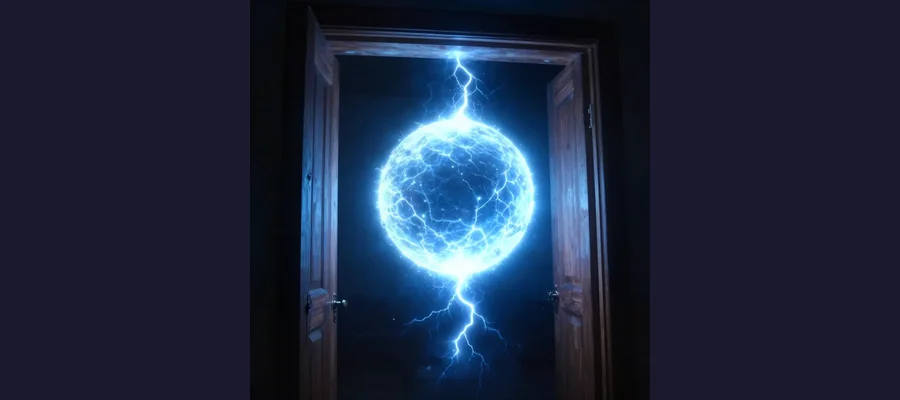
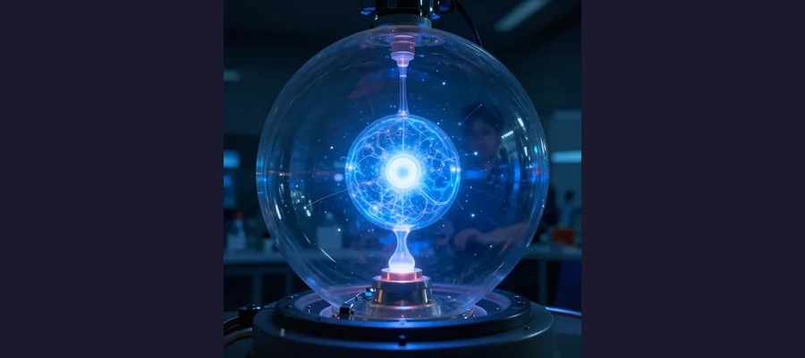

Ball Lightning: The Ghost Orbs of Storms

A mysterious glowing orb of electricity floating through the air during a storm.
Imagine looking out your window during a thunderstorm and seeing a glowing ball of light floating toward your house. It passes right through your closed door, makes a soft popping sound, and then disappears. You just witnessed ball lightning - one of nature's strangest and most mysterious phenomena!
For hundreds of years, people have reported seeing these ghostly orbs of electricity. But even today, scientists still can't fully explain what they are or how they work.
Overview
What Is Ball Lightning?
Ball lightning is exactly what it sounds like: a ball-shaped orb of light that appears during thunderstorms. Here's what makes it so strange:
- ⚡ It glows like a light bulb but can be many different colors
- 🚪 It can float right through walls, doors, and windows without breaking them
- ⏱️ It lasts much longer than regular lightning - sometimes up to a minute!
- 🔊 It often makes a sizzling, popping, or buzzing sound
Most witnesses describe ball lightning as being about the size of a grapefruit, though some have reported balls as big as beach balls or as small as golf balls.

Ball lightning has been seen floating through doorways and windows without causing damage!
👻 Ghost Stories or Real Science?
For centuries, scientists didn't believe ball lightning was real. They thought people were imagining things or lying. Today, we know it's real - but we still can't explain exactly what it is!
Evidence
Historical work on Ball Lightning is strongest when primary records, material traces, and later peer-reviewed analysis point in the same direction. This layered approach helps separate observations from retellings and reduces the risk of repeating popular but unsupported claims.
Strange Stories Through History
People have been seeing ball lightning for thousands of years. Here are some famous reports:
1638, England: During a church service, a giant ball of fire crashed through the window. It bounced around the room, injuring dozens of people and setting the pews on fire. Four people died!
1936, England: A woman watched a "fireball" roll down the stairs of her home. It passed through her front door without opening it and exploded in the street outside!
2012, China: Scientists accidentally captured ball lightning on video while studying regular lightning. It was the first time ball lightning was ever recorded by scientific instruments!
Competing Explanations
Competing explanations usually persist because each one fits part of the evidence while missing another part. Researchers test these models against chronology, physical constraints, and independent documentation to identify which interpretation requires the fewest assumptions.
Can Scientists Create Ball Lightning?

Scientists have created small glowing plasma balls in labs, but they behave differently from the real thing.
Some scientists have managed to create glowing plasma balls in laboratories using microwave ovens and electrical equipment. But these lab-created orbs only last a few seconds and behave differently from the ball lightning witnesses describe.
🔬 The Leading Theory
Many scientists think ball lightning might be a ball of plasma - the same super-hot material that makes up the sun! But plasma usually dissipates in seconds. How does ball lightning stay together for so long? That's the mystery!
Open Questions
Open questions remain because source quality is uneven across time: some records are direct and detailed, while others are fragmentary or second-hand. Future archival discoveries, improved imaging, and more precise dating methods may refine conclusions without overturning well-supported core findings.
The Mystery Continues
Despite hundreds of years of reports and modern scientific equipment, ball lightning remains one of nature's greatest unsolved puzzles. We know it exists, but we still can't predict when or where it will appear.
Until scientists can study ball lightning up close, these mysterious glowing orbs will continue to amaze and mystify us!
📖 Recommended Reading
Want to learn more? Check out Ball Lightning: A Popular Guide to a Longstanding Mystery in Atmospheric Electricity on Amazon for a deeper dive into this fascinating topic. (As an Amazon Associate, we earn from qualifying purchases.)
References & Further Reading
Editorial note: We cross-check claims across multiple independent sources. See our Editorial Policy.